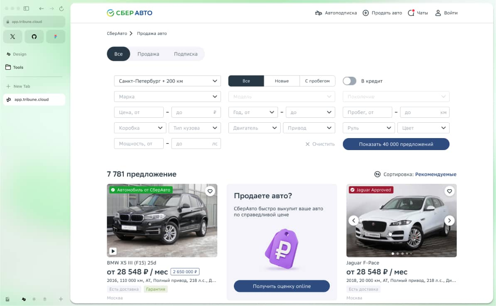
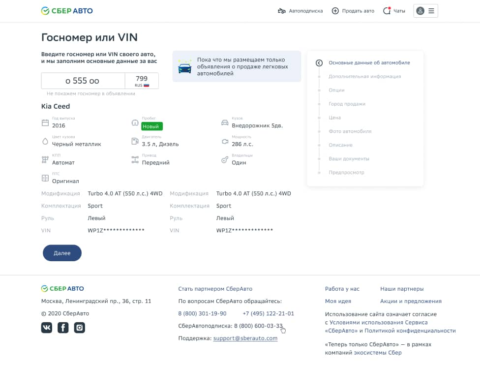
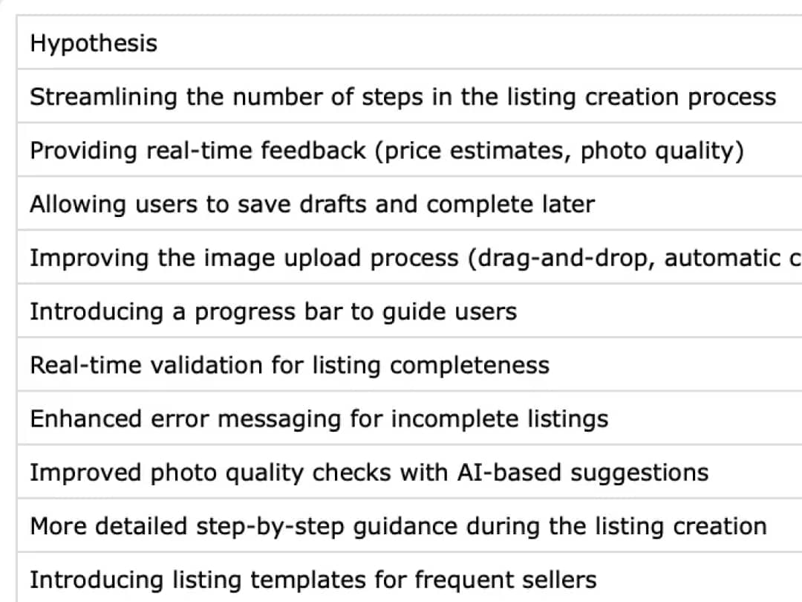
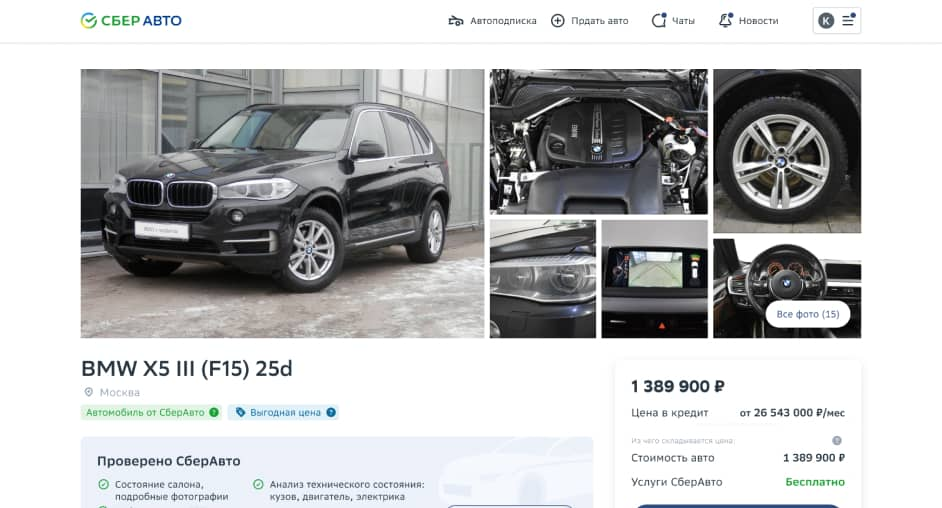
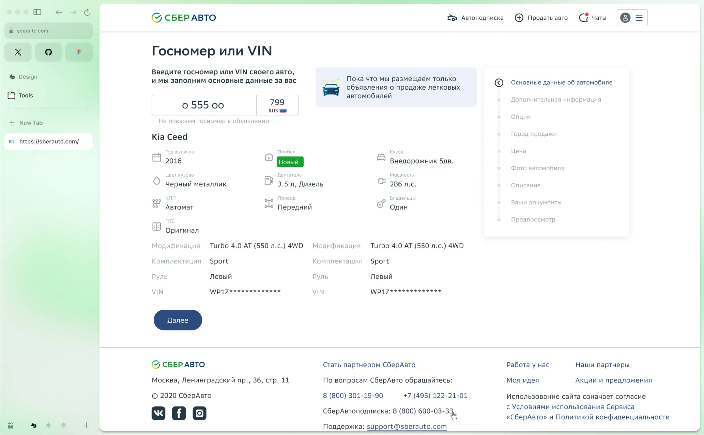
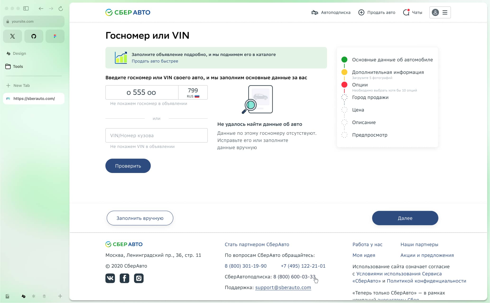
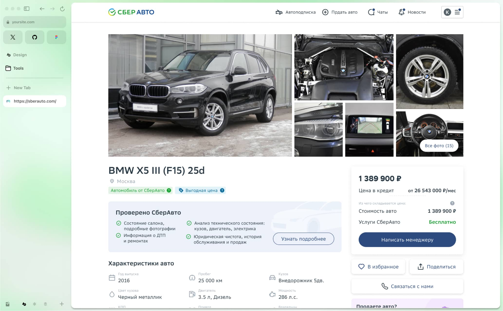
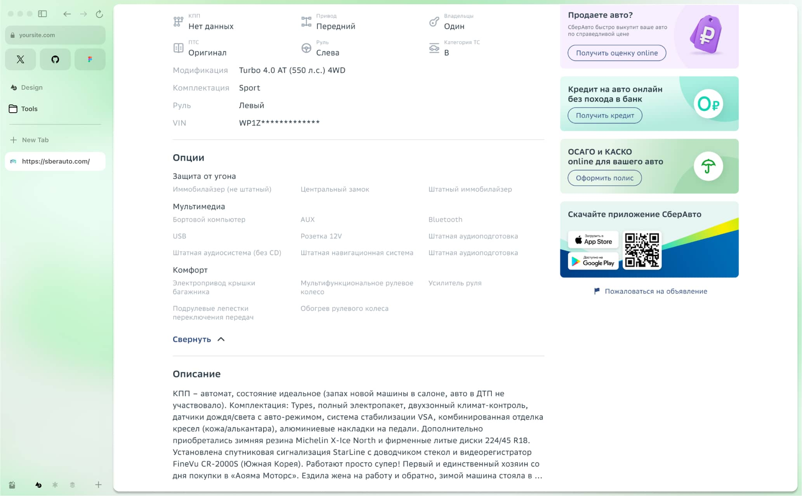
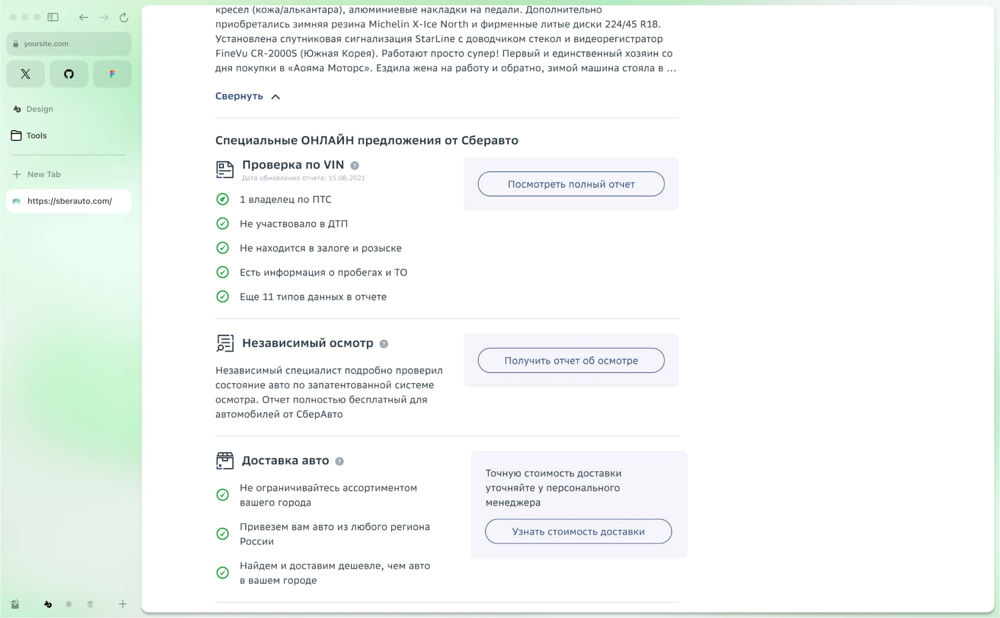
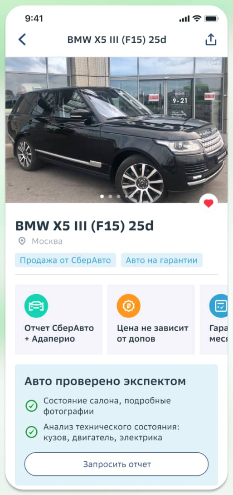

Reinventing the Car Selling Experience: 24% Boost in Listings
- Company
- SberAuto
- Role
- Product Designer
- Years
- 2020 to 2022

- 9x
- Increase in assortment
- 24%
- Completed listings
- 4pt
- Improve NPS
- 30%
- Drop-off rates
- 4%
- Purchase conversions
Contents
About Sber Auto
SberAuto is a leading marketplace in Russia for buying and selling cars, providing a platform for both B2C and B2B transactions.
The product includes a web-based platform and mobile application that serves private car owners, semi-professional sellers, and professional dealers. The marketplace allows users to list vehicles for sale, manage listings, and complete transactions.
My role
As a Product Designer, I was responsible for the design and improvement of the seller’s side of the marketplace. I collaborated closely with a cross-functional team that included a product manager, analysts, mobile and web developers, and backend engineers.
My primary focus was on the redesign of the seller's market, which involved improving the digital interface across both web and mobile platforms.
Team
- Senior Product Designer
- Product manager
- Analysts
- Mobile developers
- Web developers
- Backend engineers
- QA
Context
- The task emerged due to a high drop-off rate during the sellers’ car listing process. Users were abandoning the process midway due to its length and complexity, which negatively impacted the number of listings and the overall product inventory.
- Mission was to simplify the car listing process for users without sacrificing the essential details needed to sell vehicles effectively. Given that selling a car is a significant transaction, it was critical to maintain a balance between efficiency and the depth of information required.
Goal
- The goal was to streamline the listing creation flow, making it more intuitive and efficient to increase the number of completed listings.
Key metrics
- Improved engagement from sellers, which would be reflected in user feedback, A/B test results, and an improved Net Promoter Score (NPS)
- Increased conversion rates for vehicles sold through the platform
- Completed listings
Discovery
We also conducted user interviews with sellers who used the platform regularly + who never used it.
- Private sellersWho listed their personal vehicles for sale.
- Semi-professional sellersOr flippers, who managed several cars at a time.
- Professional dealersWho managed larger inventories through the B2B interface, though their listings were also visible on the main platform.
These interviews helped uncover pain points, such as the complexity of the process and the lack of guidance during key steps, which led to user frustration.

Competitive research
To begin, we conducted a competitor analysis, studying both direct competitors like Auto.ru and indirect competitors such as Avito. This analysis provided insights into how other platforms handled listing processes and helped us identify areas where SberAuto's experience could be improved.
Hypotheses
Streamlining the number of steps in the listing creation process would reduce user drop-offs.
Providing real-time feedback (such as price estimates and photo quality checks) would help users feel more confident about their listings.
Allowing users to save drafts of their listings and complete them later would reduce abandonment rates.
Improving the image upload process (with drag-and-drop functionality and automatic cropping) would enhance the user experience.

Problem solving
The design focused on creating a simplified, user-friendly interface that grouped steps logically
- Updated steps
- New progress bars
- Improved image upload section
- Automatic data loading
Simplifying the process by reducing the number of steps.
Implementing automatic data loading based on document information.
Enhancing the image upload process.







Interface Testing
We conducted A/B testing and usability tests with a segment of private sellers. The control group used the original process, while the test group used the redesigned interface. We measured time to complete a listing, drop-off rates, and user feedback to assess the success of the new interface.
Results and Metrics
I led the design process, collaborating with stakeholders and product manager to define requirements and prioritize features. I was responsible for the overall design of the interface and analyzing user feedback to make iterative improvements
- 9x
- Increase in assortment
- 9-fold increase in assortment mainly thanks to the automation of data entry.
- 24%
- Completed listings
- The new listing process resulted in a 24% increase in completed listings within the first month.
- 4pt
- Improve NPS
- Users provided positive feedback and we got overall improvement in the NPS, with a 4-point increase among sellers
- 30%
- Drop-off rates
- Drop-off rates during the listing process were reduced by about 30%.
- 4%
- Purchase conversions
- These improvements played a role in achieving a 4% boost in purchase conversions, which aligns with the goal of increasing completed listings and improving the marketplace experience for both sellers and buyers.
Challenges Overcome
- By simplifying the listing process, we were able to reduce drop-offs and make the experience more intuitive for users.
- Providing users with immediate, helpful automation significantly improved engagement and completion rates